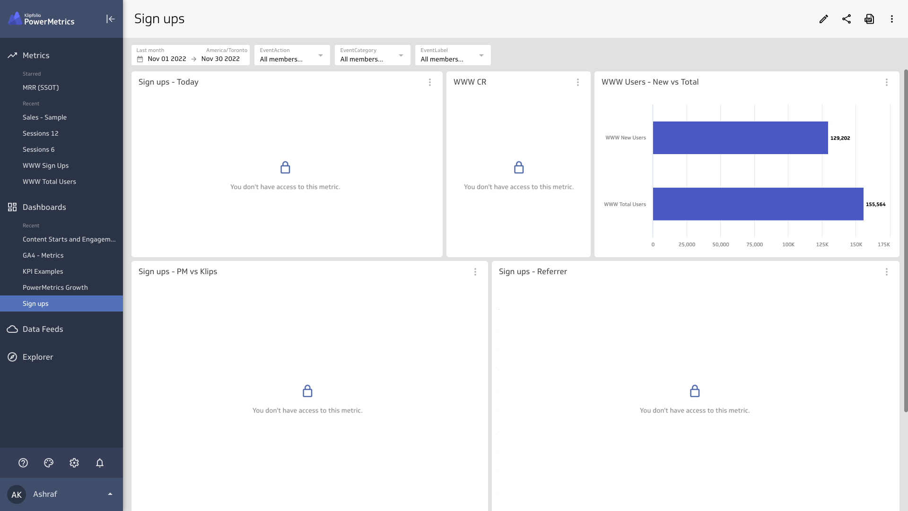
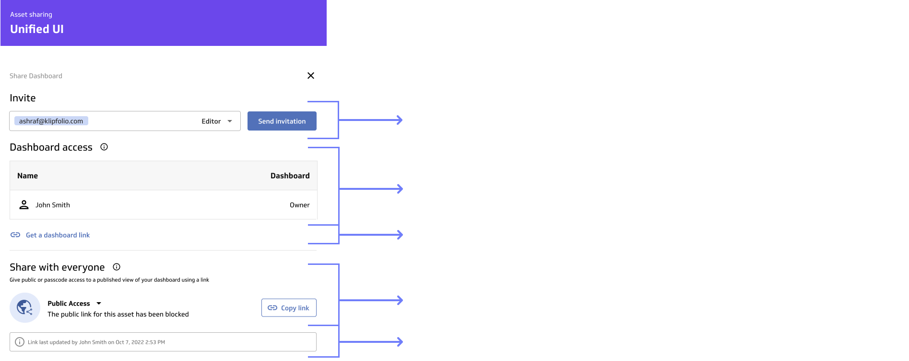

Easy Sharing
Role
Project Lead
UI/UX Design
Team members
Jose Zambrano UX Designer
Nick Venne Developer
Kyle Campbell SRE/Developer
Matt Brown Research Lead
Holly Ebbs UX Content Writer
Introduction
Assets sharing and inviting team members are great predictors in users converting (becoming paid customers), however the current experience can leave many users confused and frustrated. We try to tackle that by simplifying the sharing process as well as adding a new powerful feature called Published Views.
Opportunity
Working along our lead researcher, we came up with the Activation Score, an aggregate way of calculating the user engagement based on what activities they do (in the first 7 and 30 days).
Adding a user and sharing assets were two of the events that scored very high, and were a leading indicator of conversion.
Heuristic evaluation and usability testing the current experience
We started looking at the current experience of the inviting and sharing through looking at data, doing a heuristic evaluation, and unmoderted usability tests. The following is our findings:
Data
Diggin into data, this is a funnel showing how many new users end up inviting a user and then sharing an asset

2% of new users end up adding a team member to their account within 30 days.
24% of users who add a team member, share an asset with them.
Heuristic evaluation and issues
An example of a user sharing a dashboard with 3 different types of users:
- User A: One who has a PowerMetric account and is part of the company account.
- User B: One who has a PowerMetric account but not part of the company account.
- User C: One who does not have a PowerMetric account.

Scroll to the right to see the full user flow.
Sharing a dashboard with a user who does not have access to all the metrics is a broken and frustrating experience
If a user has already an account, you are unable to share with them or invite them to be part of your company. Resulting in a deadend and a frustrating experience

After looking at the data, and evaluating the current user experience, we came to the following conclusions:
Adding user is a hidden part of the app, and the sharing button isn't called out enough.
Misleading labels and inability to invite users through the sharing of an assets.
If a user has not been invited to the account, you are unable to simply just enter their email to invite/share with them
Get a link is a solution the does not work if a user is not already a part of the account
Sharing a dashboard where not all the metrics are also shared is a disappointing experience and can happen very easily.
If a user has already an account, you are unable to share with them or invite them to be part of your company. Resulting in a dead-end and a frustrating experience
Proposed solution
Simplify the users roles
Simplify the asset sharing hierarchy
Simplify inviting a user and sharing an asset within one unifiied UI.
Simplify sharing an asset using a link and requesting access
Allow users to share reports and dashboards beyond Klipfolio PowerMetric
Bonus feature: Published views in dark mode which can help with users using the feature as a TV mode or for presentations.
Simplifying the asset sharing hierarchy

One unified UI for sharing assets and inviting users
Sharing and inviting users within one UI

Allow sharing through a link and requesting access if the asset hasn't been shared.

Allow users to share reports and dashboards beyond Klipfolio PowerMetric

Published Views
Allow the user the ability to choose between light and dark mode. Dark mode can be especially effective for use on TV screens.

Final prototypes
Inviting and share an asset within one unified UI
Sharing a team link
Generate a secured published view dashboard and switching to dark mode
Success Metrics
An increase in both adding users and assets sharing
An increase in number of users per account
An increase in conversion due to reaching users limits